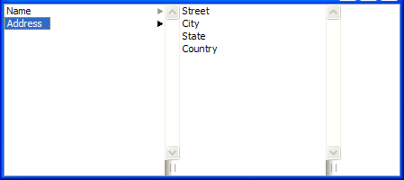

QColumnView Class
The QColumnView class provides a model/view implementation of a column view. More...
| Header: | #include <QColumnView> |
| qmake: | QT += widgets |
| Since: | Qt 4.3 |
| Inherits: | QAbstractItemView |
This class was introduced in Qt 4.3.
Properties
- resizeGripsVisible : bool
Public Functions
| QColumnView(QWidget *parent = nullptr) | |
| virtual | ~QColumnView() |
| QList<int> | columnWidths() const |
| QWidget * | previewWidget() const |
| bool | resizeGripsVisible() const |
| void | setColumnWidths(const QList<int> &list) |
| void | setPreviewWidget(QWidget *widget) |
| void | setResizeGripsVisible(bool visible) |
Reimplemented Public Functions
| virtual QModelIndex | indexAt(const QPoint &point) const override |
| virtual void | scrollTo(const QModelIndex &index, QAbstractItemView::ScrollHint hint = EnsureVisible) override |
| virtual void | selectAll() override |
| virtual void | setModel(QAbstractItemModel *model) override |
| virtual void | setRootIndex(const QModelIndex &index) override |
| virtual void | setSelectionModel(QItemSelectionModel *newSelectionModel) override |
| virtual QSize | sizeHint() const override |
| virtual QRect | visualRect(const QModelIndex &index) const override |
Signals
| void | updatePreviewWidget(const QModelIndex &index) |
Protected Functions
| virtual QAbstractItemView * | createColumn(const QModelIndex &index) |
| void | initializeColumn(QAbstractItemView *column) const |
Reimplemented Protected Functions
| virtual void | currentChanged(const QModelIndex ¤t, const QModelIndex &previous) override |
| virtual int | horizontalOffset() const override |
| virtual bool | isIndexHidden(const QModelIndex &index) const override |
| virtual QModelIndex | moveCursor(QAbstractItemView::CursorAction cursorAction, Qt::KeyboardModifiers modifiers) override |
| virtual void | resizeEvent(QResizeEvent *event) override |
| virtual void | rowsInserted(const QModelIndex &parent, int start, int end) override |
| virtual void | scrollContentsBy(int dx, int dy) override |
| virtual void | setSelection(const QRect &rect, QItemSelectionModel::SelectionFlags command) override |
| virtual int | verticalOffset() const override |
| virtual QRegion | visualRegionForSelection(const QItemSelection &selection) const override |
Detailed Description
QColumnView displays a model in a number of QListViews, one for each hierarchy in the tree. This is sometimes referred to as a cascading list.
The QColumnView class is one of the Model/View Classes and is part of Qt's model/view framework.
QColumnView implements the interfaces defined by the QAbstractItemView class to allow it to display data provided by models derived from the QAbstractItemModel class.

See also Model/View Programming.
Property Documentation
resizeGripsVisible : bool
This property holds the way to specify if the list views gets resize grips or not
By default, visible is set to true
Access functions:
| bool | resizeGripsVisible() const |
| void | setResizeGripsVisible(bool visible) |
See also setRootIndex().
Member Function Documentation
QColumnView::QColumnView(QWidget *parent = nullptr)
Constructs a column view with a parent to represent a model's data. Use setModel() to set the model.
See also QAbstractItemModel.
[signal] void QColumnView::updatePreviewWidget(const QModelIndex &index)
This signal is emitted when the preview widget should be updated to provide rich information about index
See also previewWidget().
[virtual] QColumnView::~QColumnView()
Destroys the column view.
QList<int> QColumnView::columnWidths() const
Returns a list of the width of all the columns in this view.
See also setColumnWidths().
[virtual protected] QAbstractItemView *QColumnView::createColumn(const QModelIndex &index)
To use a custom widget for the final column when you select an item overload this function and return a widget. index is the root index that will be assigned to the view.
Return the new view. QColumnView will automatically take ownership of the widget.
See also setPreviewWidget().
[override virtual protected] void QColumnView::currentChanged(const QModelIndex ¤t, const QModelIndex &previous)
Reimplements: QAbstractItemView::currentChanged(const QModelIndex ¤t, const QModelIndex &previous).
[override virtual protected] int QColumnView::horizontalOffset() const
Reimplements: QAbstractItemView::horizontalOffset() const.
[override virtual] QModelIndex QColumnView::indexAt(const QPoint &point) const
Reimplements: QAbstractItemView::indexAt(const QPoint &point) const.
[protected] void QColumnView::initializeColumn(QAbstractItemView *column) const
Copies the behavior and options of the column view and applies them to the column such as the iconSize(), textElideMode() and alternatingRowColors(). This can be useful when reimplementing createColumn().
This function was introduced in Qt 4.4.
See also createColumn().
[override virtual protected] bool QColumnView::isIndexHidden(const QModelIndex &index) const
Reimplements: QAbstractItemView::isIndexHidden(const QModelIndex &index) const.
[override virtual protected] QModelIndex QColumnView::moveCursor(QAbstractItemView::CursorAction cursorAction, Qt::KeyboardModifiers modifiers)
Reimplements: QAbstractItemView::moveCursor(QAbstractItemView::CursorAction cursorAction, Qt::KeyboardModifiers modifiers).
Move left should go to the parent index Move right should go to the child index or down if there is no child
QWidget *QColumnView::previewWidget() const
Returns the preview widget, or nullptr if there is none.
See also setPreviewWidget() and updatePreviewWidget().
[override virtual protected] void QColumnView::resizeEvent(QResizeEvent *event)
Reimplements: QAbstractItemView::resizeEvent(QResizeEvent *event).
[override virtual protected] void QColumnView::rowsInserted(const QModelIndex &parent, int start, int end)
Reimplements: QAbstractItemView::rowsInserted(const QModelIndex &parent, int start, int end).
[override virtual protected] void QColumnView::scrollContentsBy(int dx, int dy)
Reimplements: QAbstractScrollArea::scrollContentsBy(int dx, int dy).
[override virtual] void QColumnView::scrollTo(const QModelIndex &index, QAbstractItemView::ScrollHint hint = EnsureVisible)
Reimplements: QAbstractItemView::scrollTo(const QModelIndex &index, QAbstractItemView::ScrollHint hint).
[override virtual] void QColumnView::selectAll()
Reimplements: QAbstractItemView::selectAll().
void QColumnView::setColumnWidths(const QList<int> &list)
Sets the column widths to the values given in the list. Extra values in the list are kept and used when the columns are created.
If list contains too few values, only width of the rest of the columns will not be modified.
See also columnWidths() and createColumn().
[override virtual] void QColumnView::setModel(QAbstractItemModel *model)
Reimplements: QAbstractItemView::setModel(QAbstractItemModel *model).
void QColumnView::setPreviewWidget(QWidget *widget)
Sets the preview widget.
The widget becomes a child of the column view, and will be destroyed when the column area is deleted or when a new widget is set.
See also previewWidget() and updatePreviewWidget().
[override virtual] void QColumnView::setRootIndex(const QModelIndex &index)
Reimplements: QAbstractItemView::setRootIndex(const QModelIndex &index).
[override virtual protected] void QColumnView::setSelection(const QRect &rect, QItemSelectionModel::SelectionFlags command)
Reimplements: QAbstractItemView::setSelection(const QRect &rect, QItemSelectionModel::SelectionFlags flags).
[override virtual] void QColumnView::setSelectionModel(QItemSelectionModel *newSelectionModel)
Reimplements: QAbstractItemView::setSelectionModel(QItemSelectionModel *selectionModel).
[override virtual] QSize QColumnView::sizeHint() const
Reimplements: QAbstractScrollArea::sizeHint() const.
[override virtual protected] int QColumnView::verticalOffset() const
Reimplements: QAbstractItemView::verticalOffset() const.
[override virtual] QRect QColumnView::visualRect(const QModelIndex &index) const
Reimplements: QAbstractItemView::visualRect(const QModelIndex &index) const.
[override virtual protected] QRegion QColumnView::visualRegionForSelection(const QItemSelection &selection) const
Reimplements: QAbstractItemView::visualRegionForSelection(const QItemSelection &selection) const.